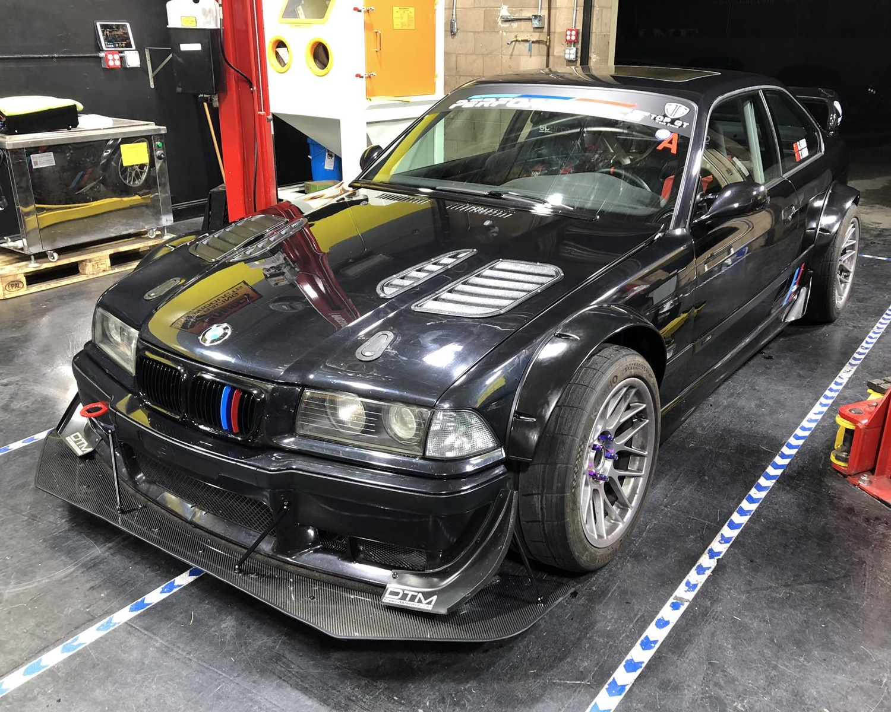

|
 |
I am a huge car enthusiastic and am very into high performance driving events(HPDE). Don't get me wrong,
I don't burn tires, I don't have loud exhuast, and I don't race illegally on streets.
I enjoy driving my car on race tracks and improve my racing techniques. Besides going to race tracks, I
also practice on go-karts and simulators (iRacing).
Besides, I am also a distributor of racing supplies in the bay area. You can get tires, brakes, fluids,
and other maintanance parts at a discounted rate.
|